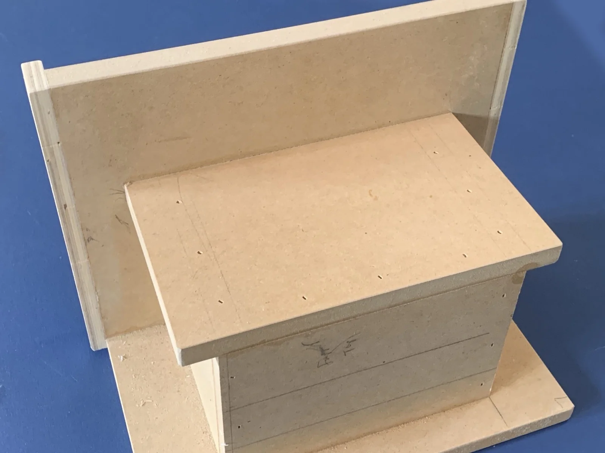
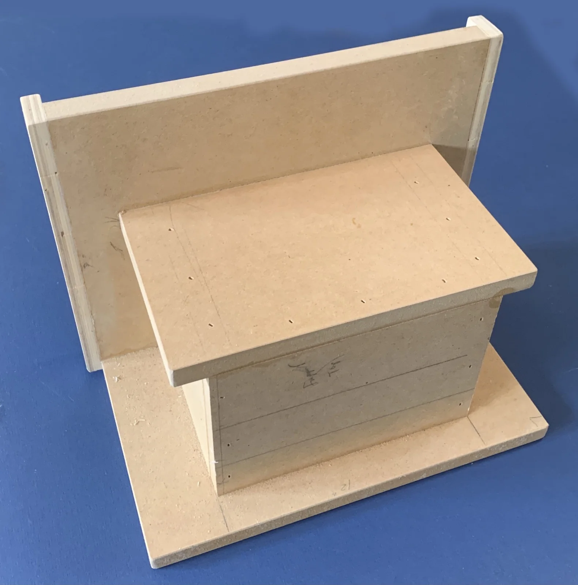
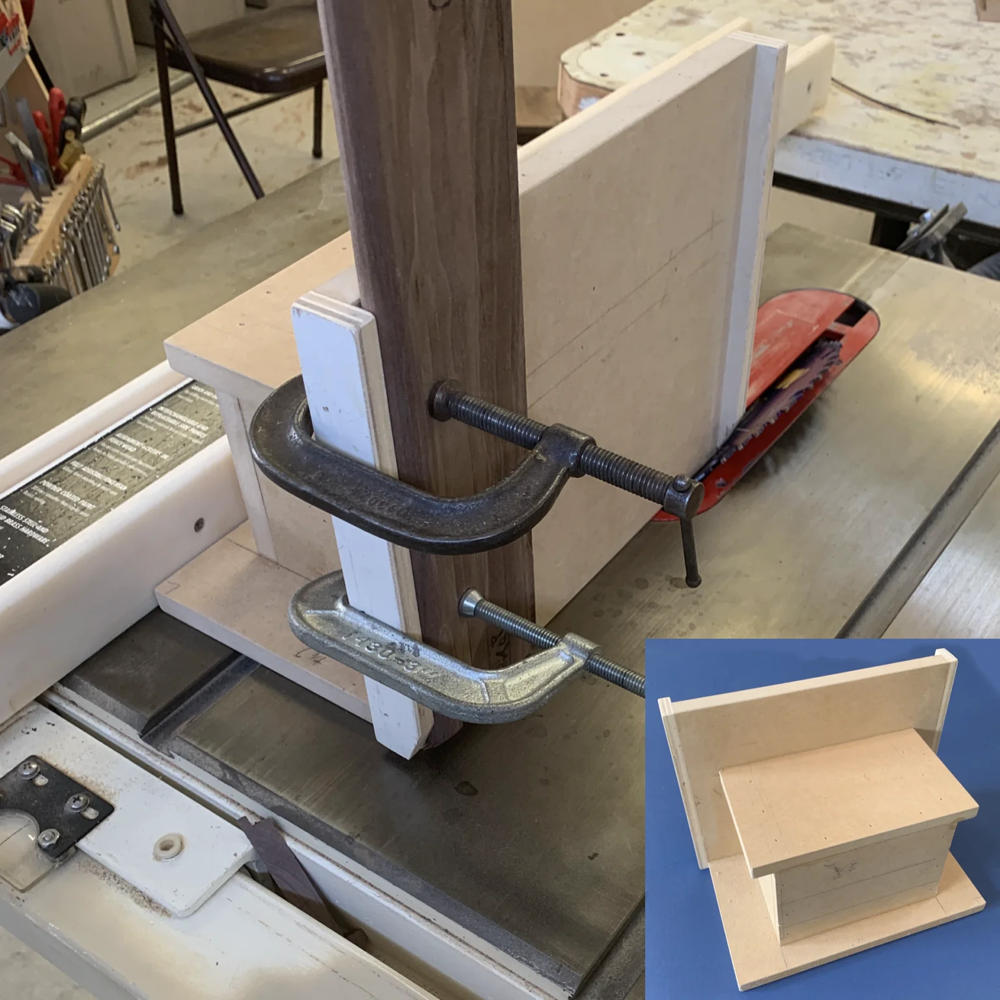
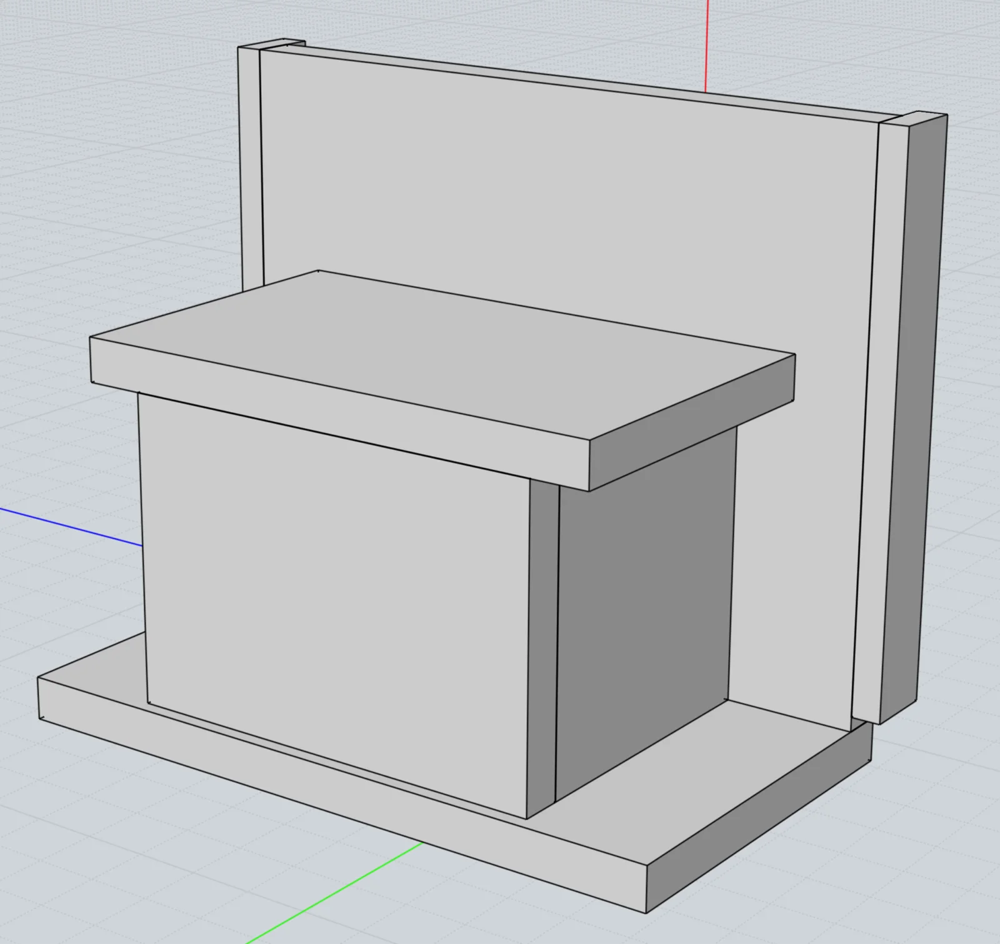
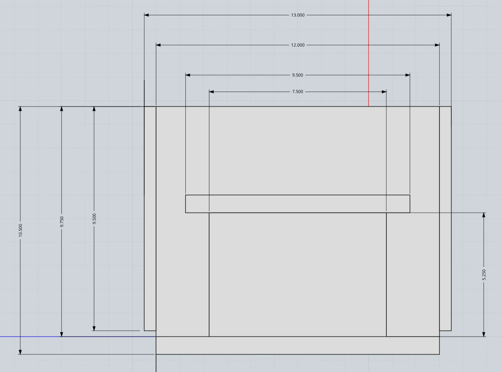
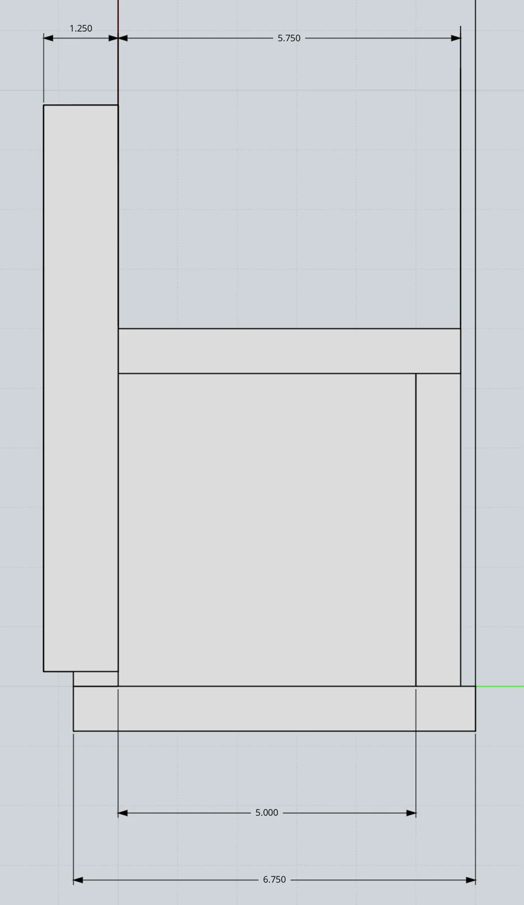

Tablesaw Vertical Tenon Jig
{kind=link}

A tablesaw jig for cutting precise 22.5-degree miter angles on frame pieces, built to make the Flag Display Case. Free 3D CAD model available.
I made this vertical tenon jig to cut the 22.5 degree miter angles required for my Flag Display Case. Standing the workpiece vertically against the jig provides a safe and accurate method to cut these small angles.
Tip… your miter cuts will only be as accurate as your jig. So make sure your assembled jig angles are all exactly 90 degrees!
Supplies
Materials & Hardware
- Plywood (jig body and fence)
Tools
- Tablesaw
- Clamps
Pulled from the instructions PDF — see the downloadable PDF for the full exploded-view parts list.
Using the Jig
Securely clamp the workpiece to the jig, then push the jig forward while holding it firmly against the tablesaw fence to make the cut.
Cutting slowly for the final 1/8″ or so is required to prevent tear-out. As an alternative, applying tape to the workpiece along the cut line can also help minimize tear-out.
Image Gallery




